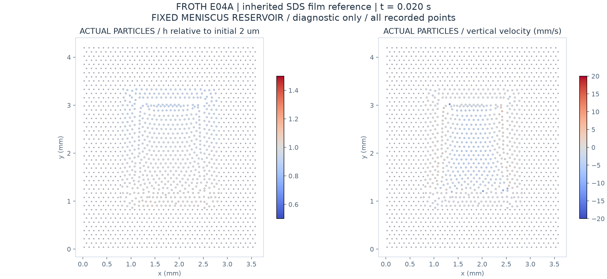

Inherited DRIFT fixed-reservoir reference. Not finite-border coupling or experimental validation.

Four physical steps to 0.020 s; mechanics/drainage Newton failures: 0/0. Recorded mean film thickness: 1.9592 um; drainage into menisci: 0.006098 um equivalent film thickness. Net film loss also includes surface transport.
All displayed points come from the final saved state, including the changing particle layout. Fibre points are grey. No grid splatting, invented surface or interpolated particle trajectory.
Audit · Full log · Vector PDF